library(multinma)
options(mc.cores = parallel::detectCores())#> For execution on a local, multicore CPU with excess RAM we recommend calling
#> options(mc.cores = parallel::detectCores())
#>
#> Attaching package: 'multinma'
#> The following objects are masked from 'package:stats':
#>
#> dgamma, pgamma, qgammaThis vignette describes the analysis of data on the number of new cases of diabetes in 22 trials of 6 antihypertensive drugs (Elliott and Meyer 2007; Dias et al. 2011). The data are available in this package as diabetes:
head(diabetes)
#> studyn studyc trtn trtc r n time
#> 1 1 MRC-E 1 Diuretic 43 1081 5.8
#> 2 1 MRC-E 2 Placebo 34 2213 5.8
#> 3 1 MRC-E 3 Beta Blocker 37 1102 5.8
#> 4 2 EWPH 1 Diuretic 29 416 4.7
#> 5 2 EWPH 2 Placebo 20 424 4.7
#> 6 3 SHEP 1 Diuretic 140 1631 3.0Setting up the network
We begin by setting up the network. We have arm-level count data giving the number of new cases of diabetes (r) out of the total (n) in each arm, so we use the function set_agd_arm(). For computational efficiency, we let “Beta Blocker” be set as the network reference treatment by default. Elliott and Meyer (2007) and Dias et al. (2011) use “Diuretic” as the reference, but it is a simple matter to transform the results after fitting the NMA model.1
db_net <- set_agd_arm(diabetes,
study = studyc,
trt = trtc,
r = r,
n = n)
db_net
#> A network with 22 AgD studies (arm-based).
#>
#> ------------------------------------------------------- AgD studies (arm-based) ----
#> Study Treatments
#> AASK 3: Beta Blocker | CCB | ACE Inhibitor
#> ALLHAT 3: Diuretic | CCB | ACE Inhibitor
#> ALPINE 2: Diuretic | ARB
#> ANBP-2 2: Diuretic | ACE Inhibitor
#> ASCOT 2: Beta Blocker | CCB
#> CAPPP 2: Beta Blocker | ACE Inhibitor
#> CHARM 2: Placebo | ARB
#> DREAM 2: Placebo | ACE Inhibitor
#> EWPH 2: Diuretic | Placebo
#> FEVER 2: Placebo | CCB
#> ... plus 12 more studies
#>
#> Outcome type: count
#> ------------------------------------------------------------------------------------
#> Total number of treatments: 6
#> Total number of studies: 22
#> Reference treatment is: Beta Blocker
#> Network is connectedWe also have details of length of follow-up in years in each trial (time), which we will use as an offset with a cloglog link function to model the data as rates. We do not have to specify this in the function set_agd_arm(): any additional columns in the data (e.g. offsets or covariates, here the column time) will automatically be made available in the network.
Plot the network structure.
plot(db_net, weight_edges = TRUE, weight_nodes = TRUE)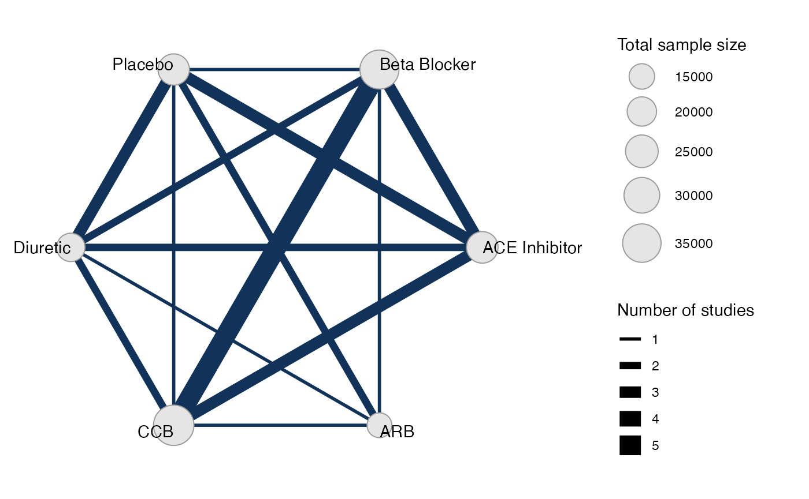
Meta-analysis models
We fit both fixed effect (FE) and random effects (RE) models.
Fixed effect meta-analysis
First, we fit a fixed effect model using the nma() function with trt_effects = "fixed". We use \(\mathrm{N}(0, 100^2)\) prior distributions for the treatment effects \(d_k\) and study-specific intercepts \(\mu_j\). We can examine the range of parameter values implied by these prior distributions with the summary() method:
summary(normal(scale = 100))
#> A Normal prior distribution: location = 0, scale = 100.
#> 50% of the prior density lies between -67.45 and 67.45.
#> 95% of the prior density lies between -196 and 196.The model is fitted using the nma() function. We specify that a cloglog link will be used with link = "cloglog" (the Binomial likelihood is the default for these data), and specify the log follow-up time offset using the regression formula regression = ~offset(log(time)).
db_fit_FE <- nma(db_net,
trt_effects = "fixed",
link = "cloglog",
regression = ~offset(log(time)),
prior_intercept = normal(scale = 100),
prior_trt = normal(scale = 100))
#> Note: No treatment classes specified in network, any interactions in `regression` formula will be separate (independent) for each treatment.
#> Use set_*() argument `trt_class` and nma() argument `class_interactions` to change this.
#> Note: Setting "Beta Blocker" as the network reference treatment.Basic parameter summaries are given by the print() method:
db_fit_FE
#> A fixed effects NMA with a binomial likelihood (cloglog link).
#> Regression model: ~offset(log(time)).
#> Inference for Stan model: binomial_1par.
#> 4 chains, each with iter=2000; warmup=1000; thin=1;
#> post-warmup draws per chain=1000, total post-warmup draws=4000.
#>
#> mean se_mean sd 2.5% 25% 50% 75% 97.5%
#> d[ACE Inhibitor] -0.30 0.00 0.05 -0.39 -0.33 -0.30 -0.27 -0.21
#> d[ARB] -0.40 0.00 0.05 -0.49 -0.43 -0.40 -0.37 -0.30
#> d[CCB] -0.20 0.00 0.03 -0.26 -0.22 -0.19 -0.18 -0.13
#> d[Diuretic] 0.06 0.00 0.06 -0.05 0.02 0.06 0.10 0.16
#> d[Placebo] -0.19 0.00 0.05 -0.29 -0.22 -0.19 -0.16 -0.09
#> lp__ -37970.27 0.09 3.67 -37978.30 -37972.51 -37970.01 -37967.65 -37963.96
#> n_eff Rhat
#> d[ACE Inhibitor] 1450 1
#> d[ARB] 1982 1
#> d[CCB] 1838 1
#> d[Diuretic] 1810 1
#> d[Placebo] 1307 1
#> lp__ 1796 1
#>
#> Samples were drawn using NUTS(diag_e) at Tue Jan 18 15:15:20 2022.
#> For each parameter, n_eff is a crude measure of effective sample size,
#> and Rhat is the potential scale reduction factor on split chains (at
#> convergence, Rhat=1).By default, summaries of the study-specific intercepts \(\mu_j\) are hidden, but could be examined by changing the pars argument:
The prior and posterior distributions can be compared visually using the plot_prior_posterior() function:
plot_prior_posterior(db_fit_FE)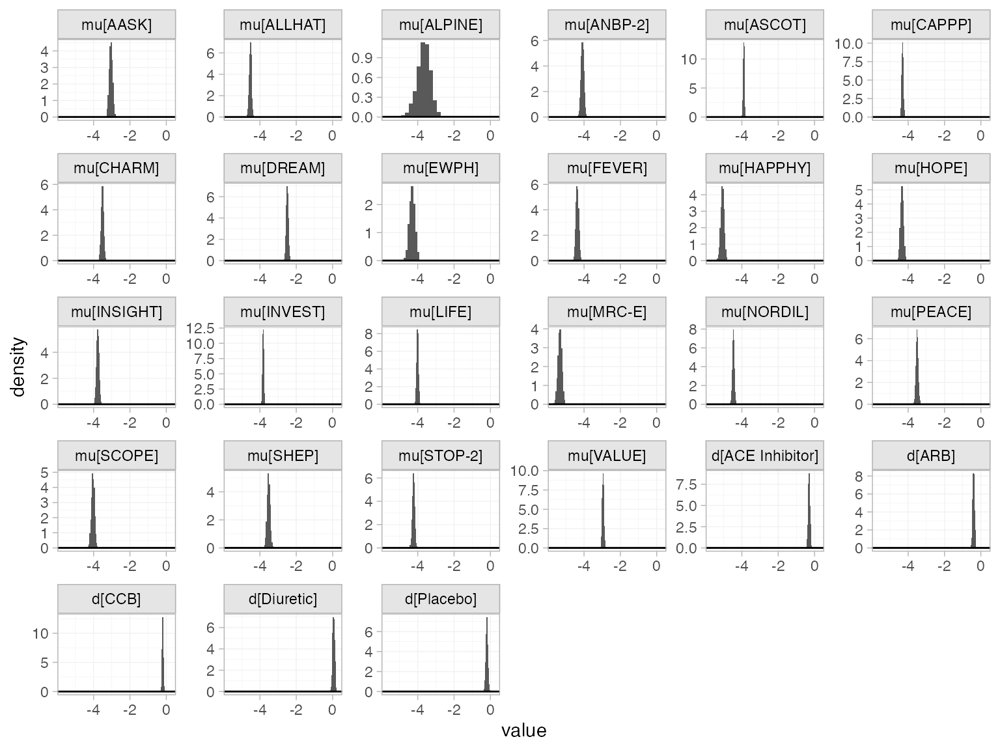
Random effects meta-analysis
We now fit a random effects model using the nma() function with trt_effects = "random". Again, we use \(\mathrm{N}(0, 100^2)\) prior distributions for the treatment effects \(d_k\) and study-specific intercepts \(\mu_j\), and we additionally use a \(\textrm{half-N}(5^2)\) prior for the heterogeneity standard deviation \(\tau\). We can examine the range of parameter values implied by these prior distributions with the summary() method:
summary(normal(scale = 100))
#> A Normal prior distribution: location = 0, scale = 100.
#> 50% of the prior density lies between -67.45 and 67.45.
#> 95% of the prior density lies between -196 and 196.
summary(half_normal(scale = 5))
#> A half-Normal prior distribution: location = 0, scale = 5.
#> 50% of the prior density lies between 0 and 3.37.
#> 95% of the prior density lies between 0 and 9.8.Fitting the RE model
db_fit_RE <- nma(db_net,
trt_effects = "random",
link = "cloglog",
regression = ~offset(log(time)),
prior_intercept = normal(scale = 10),
prior_trt = normal(scale = 10),
prior_het = half_normal(scale = 5),
init_r = 0.5)
#> Note: No treatment classes specified in network, any interactions in `regression` formula will be separate (independent) for each treatment.
#> Use set_*() argument `trt_class` and nma() argument `class_interactions` to change this.
#> Note: Setting "Beta Blocker" as the network reference treatment.Basic parameter summaries are given by the print() method:
db_fit_RE
#> A random effects NMA with a binomial likelihood (cloglog link).
#> Regression model: ~offset(log(time)).
#> Inference for Stan model: binomial_1par.
#> 4 chains, each with iter=2000; warmup=1000; thin=1;
#> post-warmup draws per chain=1000, total post-warmup draws=4000.
#>
#> mean se_mean sd 2.5% 25% 50% 75% 97.5%
#> d[ACE Inhibitor] -0.33 0.00 0.08 -0.49 -0.38 -0.33 -0.28 -0.18
#> d[ARB] -0.40 0.00 0.10 -0.61 -0.46 -0.40 -0.34 -0.23
#> d[CCB] -0.17 0.00 0.07 -0.30 -0.21 -0.17 -0.13 -0.03
#> d[Diuretic] 0.07 0.00 0.09 -0.10 0.01 0.07 0.13 0.26
#> d[Placebo] -0.22 0.00 0.09 -0.40 -0.27 -0.21 -0.16 -0.06
#> lp__ -37980.70 0.21 6.73 -37994.82 -37984.90 -37980.37 -37976.03 -37968.35
#> tau 0.13 0.00 0.04 0.06 0.10 0.13 0.16 0.23
#> n_eff Rhat
#> d[ACE Inhibitor] 2181 1
#> d[ARB] 2217 1
#> d[CCB] 2421 1
#> d[Diuretic] 2167 1
#> d[Placebo] 1577 1
#> lp__ 1003 1
#> tau 918 1
#>
#> Samples were drawn using NUTS(diag_e) at Tue Jan 18 15:15:47 2022.
#> For each parameter, n_eff is a crude measure of effective sample size,
#> and Rhat is the potential scale reduction factor on split chains (at
#> convergence, Rhat=1).By default, summaries of the study-specific intercepts \(\mu_j\) and study-specific relative effects \(\delta_{jk}\) are hidden, but could be examined by changing the pars argument:
The prior and posterior distributions can be compared visually using the plot_prior_posterior() function:
plot_prior_posterior(db_fit_RE, prior = c("trt", "het"))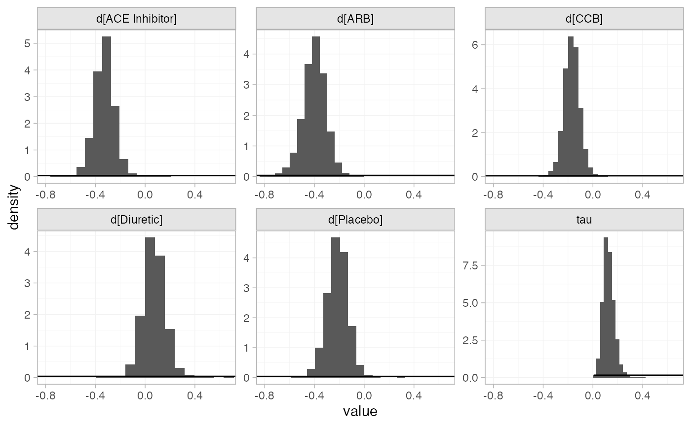
Model comparison
Model fit can be checked using the dic() function:
(dic_FE <- dic(db_fit_FE))
#> Residual deviance: 78.1 (on 48 data points)
#> pD: 26.9
#> DIC: 105.1
(dic_RE <- dic(db_fit_RE))
#> Residual deviance: 53.3 (on 48 data points)
#> pD: 38
#> DIC: 91.3The FE model is a very poor fit to the data, with a residual deviance much higher than the number of data points. The RE model fits the data better, and has a much lower DIC; we prefer the RE model.
We can also examine the residual deviance contributions with the corresponding plot() method.
plot(dic_FE)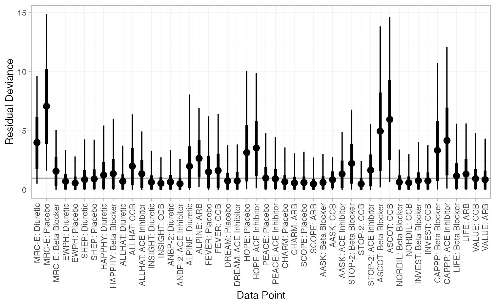
plot(dic_RE)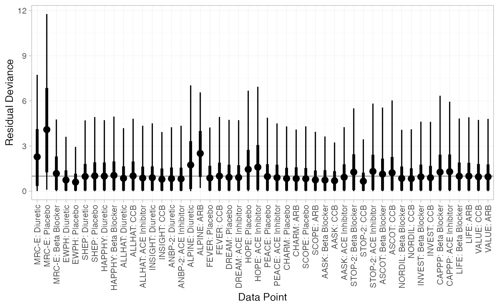
Further results
For comparison with Elliott and Meyer (2007) and Dias et al. (2011), we can produce relative effects against “Diuretic” using the relative_effects() function with trt_ref = "Diuretic":
(db_releff_FE <- relative_effects(db_fit_FE, trt_ref = "Diuretic"))
#> mean sd 2.5% 25% 50% 75% 97.5% Bulk_ESS Tail_ESS Rhat
#> d[Beta Blocker] -0.06 0.06 -0.16 -0.10 -0.06 -0.02 0.05 1824 2785 1
#> d[ACE Inhibitor] -0.36 0.05 -0.46 -0.39 -0.36 -0.32 -0.25 4110 3185 1
#> d[ARB] -0.45 0.06 -0.57 -0.50 -0.45 -0.41 -0.34 3884 3502 1
#> d[CCB] -0.25 0.05 -0.36 -0.29 -0.25 -0.22 -0.15 3278 3265 1
#> d[Placebo] -0.25 0.06 -0.36 -0.28 -0.25 -0.21 -0.14 3803 2896 1
plot(db_releff_FE, ref_line = 0)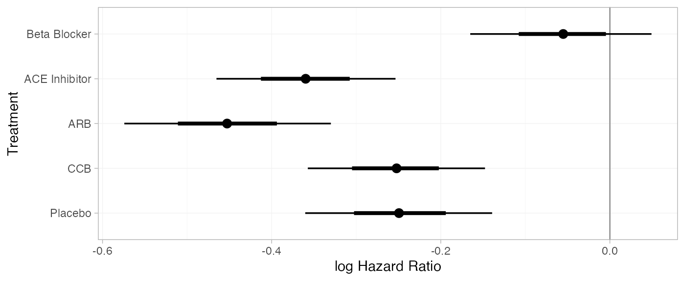
(db_releff_RE <- relative_effects(db_fit_RE, trt_ref = "Diuretic"))
#> mean sd 2.5% 25% 50% 75% 97.5% Bulk_ESS Tail_ESS Rhat
#> d[Beta Blocker] -0.07 0.09 -0.26 -0.13 -0.07 -0.01 0.10 2225 2432 1
#> d[ACE Inhibitor] -0.40 0.09 -0.58 -0.46 -0.40 -0.34 -0.24 4415 3083 1
#> d[ARB] -0.47 0.11 -0.72 -0.55 -0.47 -0.40 -0.25 3960 2328 1
#> d[CCB] -0.24 0.09 -0.41 -0.30 -0.24 -0.18 -0.07 4156 3458 1
#> d[Placebo] -0.29 0.09 -0.47 -0.35 -0.29 -0.23 -0.12 4144 2871 1
plot(db_releff_RE, ref_line = 0)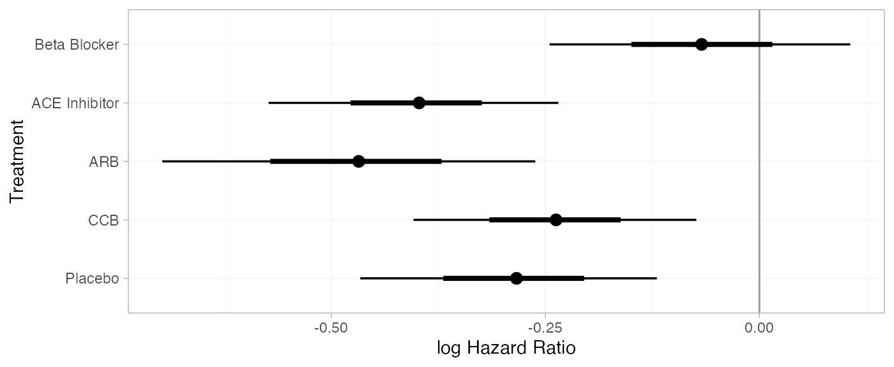
Dias et al. (2011) produce absolute predictions of the probability of developing diabetes after three years, assuming a Normal distribution on the baseline cloglog probability of developing diabetes on diuretic treatment with mean \(-4.2\) and precision \(1.11\). We can replicate these results using the predict() method. We specify a data frame of newdata, containing the time offset(s) at which to produce predictions (here only 3 years). The baseline argument takes a distr() distribution object with which we specify the corresponding Normal distribution on the baseline cloglog probability, and we set trt_ref = "Diuretic" to indicate that the baseline distribution corresponds to “Diuretic” rather than the network reference “Beta Blocker”. We set type = "response" to produce predicted event probabilities (type = "link" would produce predicted cloglog probabilities).
db_pred_FE <- predict(db_fit_FE,
newdata = data.frame(time = 3),
baseline = distr(qnorm, mean = -4.2, sd = 1.11^-0.5),
trt_ref = "Diuretic",
type = "response")
db_pred_FE
#> ------------------------------------------------------------------ Study: New 1 ----
#>
#> mean sd 2.5% 25% 50% 75% 97.5% Bulk_ESS Tail_ESS Rhat
#> pred[New 1: Beta Blocker] 0.06 0.06 0.01 0.02 0.04 0.08 0.24 4004 3914 1
#> pred[New 1: ACE Inhibitor] 0.05 0.05 0.00 0.02 0.03 0.06 0.18 4023 3911 1
#> pred[New 1: ARB] 0.04 0.05 0.00 0.01 0.03 0.05 0.17 4017 3970 1
#> pred[New 1: CCB] 0.05 0.06 0.01 0.02 0.03 0.06 0.20 4020 3954 1
#> pred[New 1: Diuretic] 0.07 0.07 0.01 0.02 0.04 0.08 0.25 4013 3931 1
#> pred[New 1: Placebo] 0.05 0.06 0.01 0.02 0.03 0.06 0.20 4027 3970 1
plot(db_pred_FE)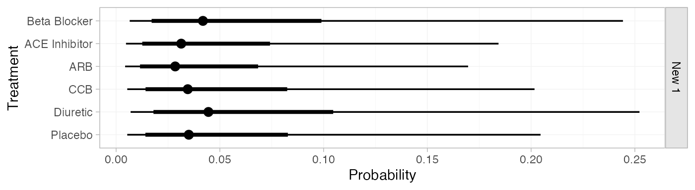
db_pred_RE <- predict(db_fit_RE,
newdata = data.frame(time = 3),
baseline = distr(qnorm, mean = -4.2, sd = 1.11^-0.5),
trt_ref = "Diuretic",
type = "response")
db_pred_RE
#> ------------------------------------------------------------------ Study: New 1 ----
#>
#> mean sd 2.5% 25% 50% 75% 97.5% Bulk_ESS Tail_ESS Rhat
#> pred[New 1: Beta Blocker] 0.06 0.06 0.01 0.02 0.04 0.08 0.24 4001 3873 1
#> pred[New 1: ACE Inhibitor] 0.04 0.05 0.00 0.02 0.03 0.06 0.18 3997 3850 1
#> pred[New 1: ARB] 0.04 0.04 0.00 0.01 0.03 0.05 0.16 4076 4011 1
#> pred[New 1: CCB] 0.05 0.05 0.01 0.02 0.04 0.07 0.21 4066 3969 1
#> pred[New 1: Diuretic] 0.07 0.07 0.01 0.02 0.04 0.08 0.25 4181 3836 1
#> pred[New 1: Placebo] 0.05 0.05 0.01 0.02 0.03 0.06 0.20 4084 3913 1
plot(db_pred_RE)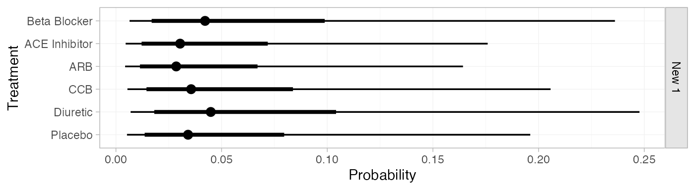
If the baseline and newdata arguments are omitted, predicted probabilities will be produced for every study in the network based on their follow-up times and estimated baseline cloglog probabilities \(\mu_j\):
db_pred_RE_studies <- predict(db_fit_RE, type = "response")
db_pred_RE_studies
#> ------------------------------------------------------------------- Study: AASK ----
#>
#> mean sd 2.5% 25% 50% 75% 97.5% Bulk_ESS Tail_ESS Rhat
#> pred[AASK: Beta Blocker] 0.17 0.01 0.14 0.16 0.17 0.18 0.20 6032 2915 1
#> pred[AASK: ACE Inhibitor] 0.12 0.01 0.10 0.12 0.12 0.13 0.15 4671 3320 1
#> pred[AASK: ARB] 0.12 0.01 0.09 0.11 0.12 0.13 0.15 4291 2920 1
#> pred[AASK: CCB] 0.15 0.01 0.12 0.13 0.14 0.15 0.18 5255 2958 1
#> pred[AASK: Diuretic] 0.18 0.02 0.14 0.17 0.18 0.19 0.22 3852 2803 1
#> pred[AASK: Placebo] 0.14 0.02 0.11 0.13 0.14 0.15 0.17 3526 2831 1
#>
#> ----------------------------------------------------------------- Study: ALLHAT ----
#>
#> mean sd 2.5% 25% 50% 75% 97.5% Bulk_ESS Tail_ESS Rhat
#> pred[ALLHAT: Beta Blocker] 0.04 0.01 0.03 0.04 0.04 0.05 0.06 2732 2602 1
#> pred[ALLHAT: ACE Inhibitor] 0.03 0.00 0.02 0.03 0.03 0.03 0.04 4170 2697 1
#> pred[ALLHAT: ARB] 0.03 0.00 0.02 0.03 0.03 0.03 0.04 4116 2316 1
#> pred[ALLHAT: CCB] 0.04 0.00 0.03 0.03 0.04 0.04 0.05 3892 2887 1
#> pred[ALLHAT: Diuretic] 0.05 0.01 0.04 0.04 0.05 0.05 0.06 4720 2920 1
#> pred[ALLHAT: Placebo] 0.03 0.00 0.03 0.03 0.03 0.04 0.04 4468 2607 1
#>
#> ----------------------------------------------------------------- Study: ALPINE ----
#>
#> mean sd 2.5% 25% 50% 75% 97.5% Bulk_ESS Tail_ESS Rhat
#> pred[ALPINE: Beta Blocker] 0.03 0.01 0.01 0.02 0.03 0.03 0.05 5874 3166 1
#> pred[ALPINE: ACE Inhibitor] 0.02 0.01 0.01 0.01 0.02 0.02 0.03 6369 2960 1
#> pred[ALPINE: ARB] 0.02 0.01 0.01 0.01 0.02 0.02 0.03 6753 3110 1
#> pred[ALPINE: CCB] 0.02 0.01 0.01 0.02 0.02 0.03 0.04 6172 2983 1
#> pred[ALPINE: Diuretic] 0.03 0.01 0.01 0.02 0.03 0.03 0.05 6419 2949 1
#> pred[ALPINE: Placebo] 0.02 0.01 0.01 0.02 0.02 0.03 0.04 6196 2962 1
#>
#> ----------------------------------------------------------------- Study: ANBP-2 ----
#>
#> mean sd 2.5% 25% 50% 75% 97.5% Bulk_ESS Tail_ESS Rhat
#> pred[ANBP-2: Beta Blocker] 0.07 0.01 0.05 0.06 0.07 0.07 0.09 3295 2783 1
#> pred[ANBP-2: ACE Inhibitor] 0.05 0.01 0.04 0.04 0.05 0.05 0.06 4865 2715 1
#> pred[ANBP-2: ARB] 0.05 0.01 0.03 0.04 0.05 0.05 0.06 4469 2883 1
#> pred[ANBP-2: CCB] 0.06 0.01 0.04 0.05 0.06 0.06 0.08 4671 2567 1
#> pred[ANBP-2: Diuretic] 0.07 0.01 0.05 0.07 0.07 0.08 0.09 5183 2943 1
#> pred[ANBP-2: Placebo] 0.05 0.01 0.04 0.05 0.05 0.06 0.07 5044 2814 1
#>
#> ------------------------------------------------------------------ Study: ASCOT ----
#>
#> mean sd 2.5% 25% 50% 75% 97.5% Bulk_ESS Tail_ESS Rhat
#> pred[ASCOT: Beta Blocker] 0.11 0.00 0.10 0.11 0.11 0.11 0.12 6135 3141 1
#> pred[ASCOT: ACE Inhibitor] 0.08 0.01 0.07 0.08 0.08 0.09 0.10 2667 2770 1
#> pred[ASCOT: ARB] 0.08 0.01 0.06 0.07 0.08 0.08 0.09 2814 1979 1
#> pred[ASCOT: CCB] 0.10 0.01 0.08 0.09 0.10 0.10 0.11 2812 2585 1
#> pred[ASCOT: Diuretic] 0.12 0.01 0.10 0.11 0.12 0.13 0.14 2396 2336 1
#> pred[ASCOT: Placebo] 0.09 0.01 0.08 0.09 0.09 0.10 0.11 1917 1929 1
#>
#> ------------------------------------------------------------------ Study: CAPPP ----
#>
#> mean sd 2.5% 25% 50% 75% 97.5% Bulk_ESS Tail_ESS Rhat
#> pred[CAPPP: Beta Blocker] 0.07 0.00 0.07 0.07 0.07 0.08 0.08 4850 3041 1
#> pred[CAPPP: ACE Inhibitor] 0.05 0.00 0.05 0.05 0.05 0.06 0.06 2490 2515 1
#> pred[CAPPP: ARB] 0.05 0.01 0.04 0.05 0.05 0.05 0.06 2482 2075 1
#> pred[CAPPP: CCB] 0.06 0.00 0.05 0.06 0.06 0.07 0.07 3342 3051 1
#> pred[CAPPP: Diuretic] 0.08 0.01 0.07 0.08 0.08 0.09 0.10 2599 2867 1
#> pred[CAPPP: Placebo] 0.06 0.01 0.05 0.06 0.06 0.06 0.07 1943 2382 1
#>
#> ------------------------------------------------------------------ Study: CHARM ----
#>
#> mean sd 2.5% 25% 50% 75% 97.5% Bulk_ESS Tail_ESS Rhat
#> pred[CHARM: Beta Blocker] 0.09 0.01 0.07 0.08 0.09 0.10 0.12 2429 2254 1
#> pred[CHARM: ACE Inhibitor] 0.07 0.01 0.05 0.06 0.07 0.07 0.09 3786 2943 1
#> pred[CHARM: ARB] 0.06 0.01 0.05 0.06 0.06 0.07 0.08 4862 2732 1
#> pred[CHARM: CCB] 0.08 0.01 0.06 0.07 0.08 0.08 0.10 3238 2521 1
#> pred[CHARM: Diuretic] 0.10 0.01 0.07 0.09 0.10 0.11 0.13 3579 2396 1
#> pred[CHARM: Placebo] 0.07 0.01 0.06 0.07 0.07 0.08 0.09 4517 2903 1
#>
#> ------------------------------------------------------------------ Study: DREAM ----
#>
#> mean sd 2.5% 25% 50% 75% 97.5% Bulk_ESS Tail_ESS Rhat
#> pred[DREAM: Beta Blocker] 0.23 0.03 0.18 0.21 0.23 0.24 0.29 2276 2064 1
#> pred[DREAM: ACE Inhibitor] 0.17 0.02 0.13 0.16 0.17 0.18 0.21 4157 2464 1
#> pred[DREAM: ARB] 0.16 0.02 0.12 0.15 0.16 0.17 0.21 4106 2403 1
#> pred[DREAM: CCB] 0.20 0.03 0.15 0.18 0.19 0.21 0.25 3647 2279 1
#> pred[DREAM: Diuretic] 0.24 0.03 0.19 0.22 0.24 0.26 0.31 3891 1968 1
#> pred[DREAM: Placebo] 0.19 0.02 0.15 0.17 0.19 0.20 0.24 4178 2154 1
#>
#> ------------------------------------------------------------------- Study: EWPH ----
#>
#> mean sd 2.5% 25% 50% 75% 97.5% Bulk_ESS Tail_ESS Rhat
#> pred[EWPH: Beta Blocker] 0.06 0.01 0.04 0.05 0.06 0.07 0.09 4420 2707 1
#> pred[EWPH: ACE Inhibitor] 0.05 0.01 0.03 0.04 0.04 0.05 0.06 5444 3255 1
#> pred[EWPH: ARB] 0.04 0.01 0.03 0.04 0.04 0.05 0.06 5266 3134 1
#> pred[EWPH: CCB] 0.05 0.01 0.04 0.05 0.05 0.06 0.08 5398 3065 1
#> pred[EWPH: Diuretic] 0.07 0.01 0.04 0.06 0.07 0.07 0.09 6084 3150 1
#> pred[EWPH: Placebo] 0.05 0.01 0.03 0.04 0.05 0.06 0.07 5684 3254 1
#>
#> ------------------------------------------------------------------ Study: FEVER ----
#>
#> mean sd 2.5% 25% 50% 75% 97.5% Bulk_ESS Tail_ESS Rhat
#> pred[FEVER: Beta Blocker] 0.04 0.01 0.03 0.04 0.04 0.04 0.06 3231 2775 1
#> pred[FEVER: ACE Inhibitor] 0.03 0.00 0.02 0.03 0.03 0.03 0.04 4526 2876 1
#> pred[FEVER: ARB] 0.03 0.00 0.02 0.03 0.03 0.03 0.04 4614 2571 1
#> pred[FEVER: CCB] 0.04 0.00 0.03 0.03 0.03 0.04 0.05 4147 2517 1
#> pred[FEVER: Diuretic] 0.04 0.01 0.03 0.04 0.04 0.05 0.06 4290 2282 1
#> pred[FEVER: Placebo] 0.03 0.00 0.03 0.03 0.03 0.04 0.04 4344 2690 1
#>
#> ----------------------------------------------------------------- Study: HAPPHY ----
#>
#> mean sd 2.5% 25% 50% 75% 97.5% Bulk_ESS Tail_ESS Rhat
#> pred[HAPPHY: Beta Blocker] 0.02 0 0.02 0.02 0.02 0.03 0.03 6319 3213 1
#> pred[HAPPHY: ACE Inhibitor] 0.02 0 0.01 0.02 0.02 0.02 0.02 4568 3024 1
#> pred[HAPPHY: ARB] 0.02 0 0.01 0.02 0.02 0.02 0.02 4244 2646 1
#> pred[HAPPHY: CCB] 0.02 0 0.02 0.02 0.02 0.02 0.03 4964 2802 1
#> pred[HAPPHY: Diuretic] 0.03 0 0.02 0.02 0.03 0.03 0.03 3617 3273 1
#> pred[HAPPHY: Placebo] 0.02 0 0.02 0.02 0.02 0.02 0.02 3415 2931 1
#>
#> ------------------------------------------------------------------- Study: HOPE ----
#>
#> mean sd 2.5% 25% 50% 75% 97.5% Bulk_ESS Tail_ESS Rhat
#> pred[HOPE: Beta Blocker] 0.06 0.01 0.04 0.05 0.06 0.06 0.08 2908 2418 1
#> pred[HOPE: ACE Inhibitor] 0.04 0.01 0.03 0.04 0.04 0.05 0.06 4795 3141 1
#> pred[HOPE: ARB] 0.04 0.01 0.03 0.04 0.04 0.04 0.05 4608 3102 1
#> pred[HOPE: CCB] 0.05 0.01 0.04 0.04 0.05 0.05 0.07 4068 2795 1
#> pred[HOPE: Diuretic] 0.06 0.01 0.05 0.06 0.06 0.07 0.08 4707 3029 1
#> pred[HOPE: Placebo] 0.05 0.01 0.04 0.04 0.05 0.05 0.06 5257 2886 1
#>
#> ---------------------------------------------------------------- Study: INSIGHT ----
#>
#> mean sd 2.5% 25% 50% 75% 97.5% Bulk_ESS Tail_ESS Rhat
#> pred[INSIGHT: Beta Blocker] 0.07 0.01 0.05 0.06 0.06 0.07 0.08 2957 2701 1
#> pred[INSIGHT: ACE Inhibitor] 0.05 0.01 0.03 0.04 0.05 0.05 0.06 4378 2667 1
#> pred[INSIGHT: ARB] 0.04 0.01 0.03 0.04 0.04 0.05 0.06 4277 2562 1
#> pred[INSIGHT: CCB] 0.06 0.01 0.04 0.05 0.06 0.06 0.07 4211 2907 1
#> pred[INSIGHT: Diuretic] 0.07 0.01 0.05 0.06 0.07 0.07 0.09 5376 2839 1
#> pred[INSIGHT: Placebo] 0.05 0.01 0.04 0.05 0.05 0.06 0.07 4527 3062 1
#>
#> ----------------------------------------------------------------- Study: INVEST ----
#>
#> mean sd 2.5% 25% 50% 75% 97.5% Bulk_ESS Tail_ESS Rhat
#> pred[INVEST: Beta Blocker] 0.08 0.00 0.08 0.08 0.08 0.08 0.09 7180 3208 1
#> pred[INVEST: ACE Inhibitor] 0.06 0.00 0.05 0.06 0.06 0.06 0.07 2621 2729 1
#> pred[INVEST: ARB] 0.06 0.01 0.05 0.05 0.06 0.06 0.07 2639 1835 1
#> pred[INVEST: CCB] 0.07 0.00 0.06 0.07 0.07 0.07 0.08 2896 2841 1
#> pred[INVEST: Diuretic] 0.09 0.01 0.07 0.08 0.09 0.09 0.11 2462 2777 1
#> pred[INVEST: Placebo] 0.07 0.01 0.06 0.06 0.07 0.07 0.08 1938 2229 1
#>
#> ------------------------------------------------------------------- Study: LIFE ----
#>
#> mean sd 2.5% 25% 50% 75% 97.5% Bulk_ESS Tail_ESS Rhat
#> pred[LIFE: Beta Blocker] 0.08 0.00 0.07 0.08 0.08 0.08 0.09 6421 2884 1
#> pred[LIFE: ACE Inhibitor] 0.06 0.01 0.05 0.06 0.06 0.06 0.07 2937 2541 1
#> pred[LIFE: ARB] 0.06 0.01 0.04 0.05 0.06 0.06 0.07 2842 1907 1
#> pred[LIFE: CCB] 0.07 0.01 0.06 0.07 0.07 0.07 0.08 3415 2652 1
#> pred[LIFE: Diuretic] 0.09 0.01 0.07 0.08 0.09 0.09 0.11 2900 2580 1
#> pred[LIFE: Placebo] 0.07 0.01 0.05 0.06 0.07 0.07 0.08 2048 2403 1
#>
#> ------------------------------------------------------------------ Study: MRC-E ----
#>
#> mean sd 2.5% 25% 50% 75% 97.5% Bulk_ESS Tail_ESS Rhat
#> pred[MRC-E: Beta Blocker] 0.03 0 0.02 0.03 0.03 0.03 0.04 4171 3194 1
#> pred[MRC-E: ACE Inhibitor] 0.02 0 0.02 0.02 0.02 0.02 0.03 5908 3276 1
#> pred[MRC-E: ARB] 0.02 0 0.01 0.02 0.02 0.02 0.03 5324 3267 1
#> pred[MRC-E: CCB] 0.03 0 0.02 0.02 0.02 0.03 0.03 5090 3367 1
#> pred[MRC-E: Diuretic] 0.03 0 0.02 0.03 0.03 0.03 0.04 4785 2792 1
#> pred[MRC-E: Placebo] 0.02 0 0.02 0.02 0.02 0.03 0.03 4574 3125 1
#>
#> ----------------------------------------------------------------- Study: NORDIL ----
#>
#> mean sd 2.5% 25% 50% 75% 97.5% Bulk_ESS Tail_ESS Rhat
#> pred[NORDIL: Beta Blocker] 0.05 0.00 0.04 0.05 0.05 0.05 0.06 7846 3493 1
#> pred[NORDIL: ACE Inhibitor] 0.04 0.00 0.03 0.03 0.04 0.04 0.04 3465 2877 1
#> pred[NORDIL: ARB] 0.03 0.00 0.03 0.03 0.03 0.04 0.04 3138 2338 1
#> pred[NORDIL: CCB] 0.04 0.00 0.04 0.04 0.04 0.04 0.05 3690 3164 1
#> pred[NORDIL: Diuretic] 0.05 0.01 0.04 0.05 0.05 0.06 0.07 3257 2492 1
#> pred[NORDIL: Placebo] 0.04 0.00 0.03 0.04 0.04 0.04 0.05 2434 2111 1
#>
#> ------------------------------------------------------------------ Study: PEACE ----
#>
#> mean sd 2.5% 25% 50% 75% 97.5% Bulk_ESS Tail_ESS Rhat
#> pred[PEACE: Beta Blocker] 0.14 0.02 0.10 0.13 0.14 0.15 0.18 2759 2163 1
#> pred[PEACE: ACE Inhibitor] 0.10 0.01 0.08 0.09 0.10 0.11 0.13 4543 2530 1
#> pred[PEACE: ARB] 0.09 0.01 0.07 0.09 0.09 0.10 0.13 4334 2458 1
#> pred[PEACE: CCB] 0.12 0.02 0.09 0.11 0.12 0.13 0.16 4145 2600 1
#> pred[PEACE: Diuretic] 0.15 0.02 0.11 0.13 0.15 0.16 0.20 5003 2305 1
#> pred[PEACE: Placebo] 0.11 0.01 0.09 0.10 0.11 0.12 0.14 5275 2401 1
#>
#> ------------------------------------------------------------------ Study: SCOPE ----
#>
#> mean sd 2.5% 25% 50% 75% 97.5% Bulk_ESS Tail_ESS Rhat
#> pred[SCOPE: Beta Blocker] 0.07 0.01 0.05 0.06 0.06 0.07 0.09 2913 3000 1
#> pred[SCOPE: ACE Inhibitor] 0.05 0.01 0.03 0.04 0.05 0.05 0.06 4490 3287 1
#> pred[SCOPE: ARB] 0.04 0.01 0.03 0.04 0.04 0.05 0.06 4855 2931 1
#> pred[SCOPE: CCB] 0.06 0.01 0.04 0.05 0.05 0.06 0.07 3981 3039 1
#> pred[SCOPE: Diuretic] 0.07 0.01 0.05 0.06 0.07 0.08 0.10 4500 3156 1
#> pred[SCOPE: Placebo] 0.05 0.01 0.04 0.05 0.05 0.06 0.07 4970 3292 1
#>
#> ------------------------------------------------------------------- Study: SHEP ----
#>
#> mean sd 2.5% 25% 50% 75% 97.5% Bulk_ESS Tail_ESS Rhat
#> pred[SHEP: Beta Blocker] 0.09 0.01 0.06 0.08 0.09 0.09 0.11 2644 2429 1
#> pred[SHEP: ACE Inhibitor] 0.06 0.01 0.05 0.06 0.06 0.07 0.08 4205 2683 1
#> pred[SHEP: ARB] 0.06 0.01 0.04 0.05 0.06 0.06 0.08 3995 2661 1
#> pred[SHEP: CCB] 0.07 0.01 0.05 0.07 0.07 0.08 0.10 3840 2475 1
#> pred[SHEP: Diuretic] 0.09 0.01 0.07 0.08 0.09 0.10 0.12 4321 2825 1
#> pred[SHEP: Placebo] 0.07 0.01 0.05 0.06 0.07 0.08 0.09 4190 2827 1
#>
#> ----------------------------------------------------------------- Study: STOP-2 ----
#>
#> mean sd 2.5% 25% 50% 75% 97.5% Bulk_ESS Tail_ESS Rhat
#> pred[STOP-2: Beta Blocker] 0.05 0.00 0.04 0.05 0.05 0.06 0.06 4571 2806 1
#> pred[STOP-2: ACE Inhibitor] 0.04 0.00 0.03 0.04 0.04 0.04 0.05 3206 2810 1
#> pred[STOP-2: ARB] 0.04 0.00 0.03 0.03 0.04 0.04 0.04 3074 2247 1
#> pred[STOP-2: CCB] 0.05 0.00 0.04 0.04 0.05 0.05 0.05 4436 2568 1
#> pred[STOP-2: Diuretic] 0.06 0.01 0.05 0.05 0.06 0.06 0.07 3563 3154 1
#> pred[STOP-2: Placebo] 0.04 0.00 0.03 0.04 0.04 0.05 0.05 2554 2109 1
#>
#> ------------------------------------------------------------------ Study: VALUE ----
#>
#> mean sd 2.5% 25% 50% 75% 97.5% Bulk_ESS Tail_ESS Rhat
#> pred[VALUE: Beta Blocker] 0.20 0.02 0.15 0.18 0.19 0.21 0.25 3229 2197 1
#> pred[VALUE: ACE Inhibitor] 0.15 0.02 0.11 0.13 0.14 0.16 0.19 4154 2105 1
#> pred[VALUE: ARB] 0.14 0.02 0.10 0.13 0.14 0.15 0.17 4760 2532 1
#> pred[VALUE: CCB] 0.17 0.02 0.13 0.16 0.17 0.18 0.21 4378 2557 1
#> pred[VALUE: Diuretic] 0.21 0.03 0.16 0.19 0.21 0.23 0.27 4182 2680 1
#> pred[VALUE: Placebo] 0.16 0.02 0.12 0.15 0.16 0.17 0.21 4314 2418 1
plot(db_pred_RE_studies)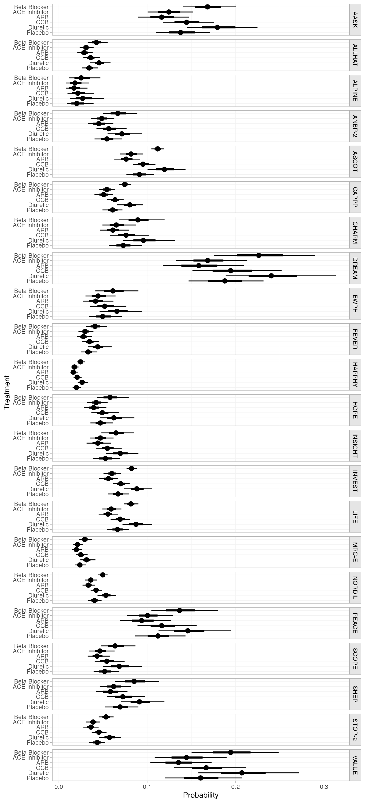
We can also produce treatment rankings, rank probabilities, and cumulative rank probabilities.
(db_ranks <- posterior_ranks(db_fit_RE))
#> mean sd 2.5% 25% 50% 75% 97.5% Bulk_ESS Tail_ESS Rhat
#> rank[Beta Blocker] 5.19 0.43 5 5 5 5 6 2665 NA 1
#> rank[ACE Inhibitor] 1.85 0.54 1 2 2 2 3 3816 3569 1
#> rank[ARB] 1.26 0.52 1 1 1 1 3 3613 3024 1
#> rank[CCB] 3.71 0.53 3 3 4 4 4 3840 3344 1
#> rank[Diuretic] 5.79 0.42 5 6 6 6 6 2635 NA 1
#> rank[Placebo] 3.19 0.59 2 3 3 4 4 3254 3262 1
plot(db_ranks)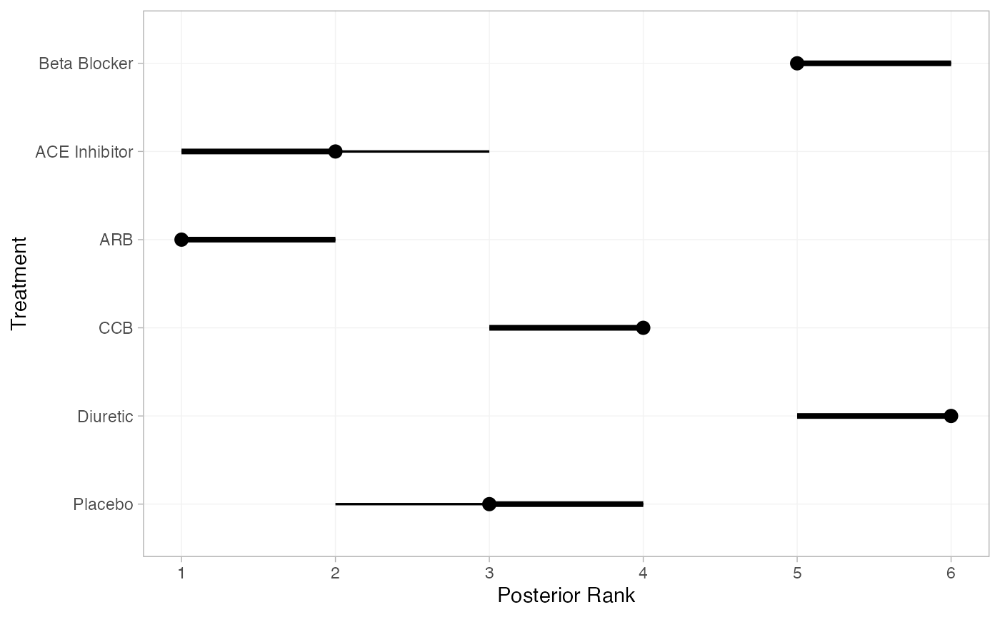
(db_rankprobs <- posterior_rank_probs(db_fit_RE))
#> p_rank[1] p_rank[2] p_rank[3] p_rank[4] p_rank[5] p_rank[6]
#> d[Beta Blocker] 0.00 0.00 0.00 0.01 0.78 0.2
#> d[ACE Inhibitor] 0.23 0.70 0.06 0.01 0.00 0.0
#> d[ARB] 0.77 0.20 0.03 0.00 0.00 0.0
#> d[CCB] 0.00 0.02 0.26 0.71 0.01 0.0
#> d[Diuretic] 0.00 0.00 0.00 0.00 0.20 0.8
#> d[Placebo] 0.01 0.07 0.65 0.27 0.00 0.0
plot(db_rankprobs)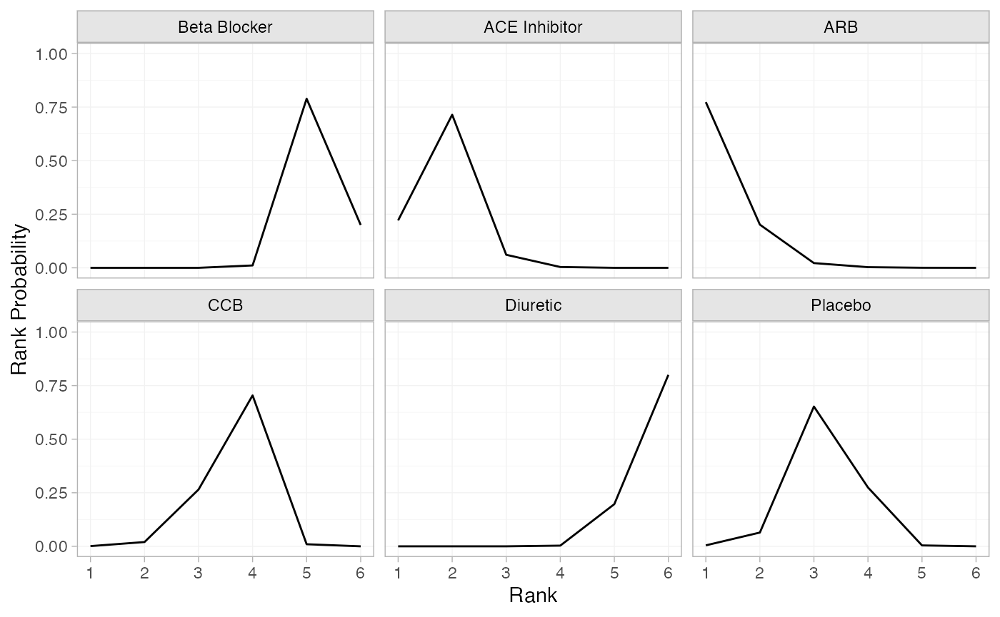
(db_cumrankprobs <- posterior_rank_probs(db_fit_RE, cumulative = TRUE))
#> p_rank[1] p_rank[2] p_rank[3] p_rank[4] p_rank[5] p_rank[6]
#> d[Beta Blocker] 0.00 0.00 0.00 0.01 0.80 1
#> d[ACE Inhibitor] 0.23 0.93 0.99 1.00 1.00 1
#> d[ARB] 0.77 0.97 1.00 1.00 1.00 1
#> d[CCB] 0.00 0.02 0.28 0.99 1.00 1
#> d[Diuretic] 0.00 0.00 0.00 0.00 0.21 1
#> d[Placebo] 0.01 0.08 0.73 1.00 1.00 1
plot(db_cumrankprobs)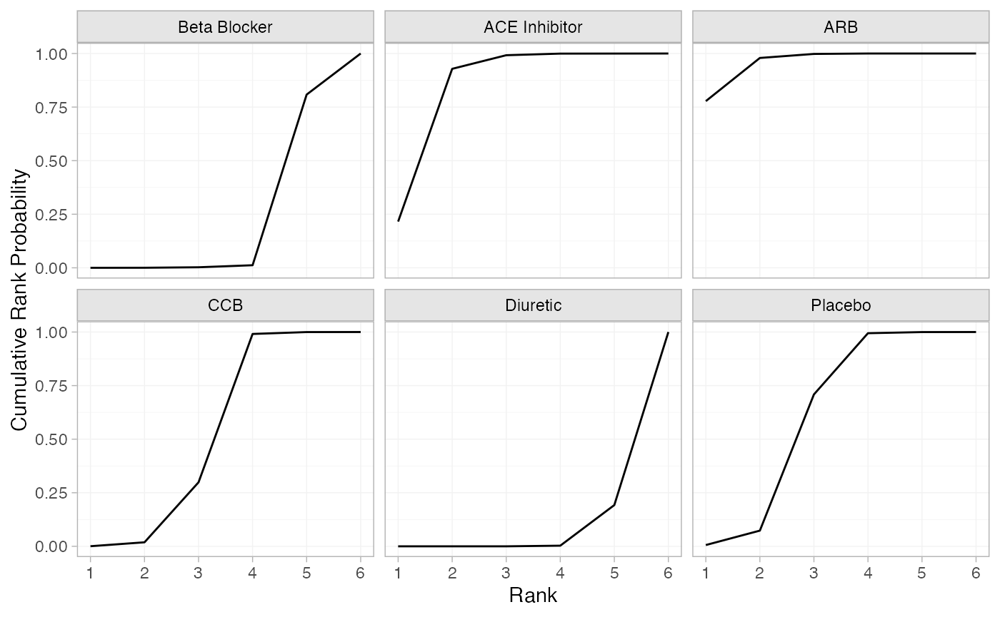